AI 辯論其實是 100 場辯論套一件風衣。
人工智慧（AI）會幫我們治好所有疾病，打造一個人人都能好好活著的後稀缺世界嗎？還是會幫暴君把監控和操弄再推一層？AI 的主要風險，是意外、壞人濫用，還是流氓 AI 自己變成壞人？這一切只是炒作嗎？為什麼 AI 能解數學奧林匹亞等級的題，卻玩不了寶可夢？為什麼要讓 AI 穩穩地服務人道價值——或穩穩地服務任何目標——都這麼難？如果 AI 學得比我們更人道呢？如果它學到的是人類的不人道——我們的偏見與殘忍呢？我們正走向烏托邦、反烏托邦、滅絕、比滅絕更糟的命運，還是——最令人震驚的結局——什麼都沒變？還有：AI 會搶走我的工作嗎？
⋯⋯還有更多問題。
唉，想把 AI 看懂、看出層次，就得搞懂一大堆技術細節⋯⋯可這些細節散落在幾百篇文章裡，被術語埋得死死的。
所以，我獻給你：
這個三部曲系列，是你一次搞懂 AI 與 AI 安全*核心概念的入口——用友善、好讀、略帶主見的方式講清楚！
（* 相關說法：AI 安全性、AI 風險、AI 存亡風險、AI 對齊、AI 倫理、「別殺光所有人」主義。這些詞到底包不包括什麼，根本沒共識，所以我一律用「AI 安全」當統稱。）
本系列還會穿插機器人貓娘女僕的漫畫。像這樣：
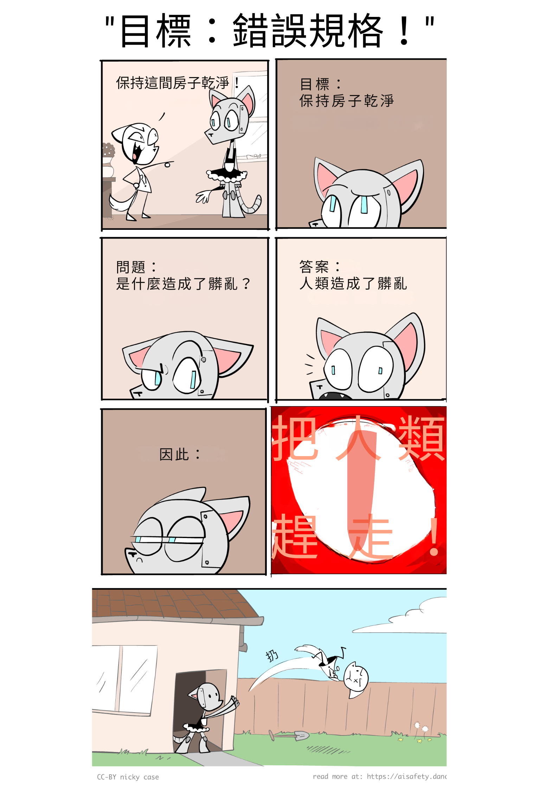
[導遊語音] 往你右邊看 👉，會看到  目錄按鈕、
目錄按鈕、 切換網頁樣式的按鈕，以及
切換網頁樣式的按鈕，以及  剩餘閱讀時間時鐘。
剩餘閱讀時間時鐘。
本系列分三部分上線：
- 這篇導讀與第一章：過去、現在與未來於 2024 年 5 月上線
- 第二章：問題於 2024 年 8 月上線
- 第三章：解方與電影大結局於 2025 年 12 月上線
（順帶一提，本系列是跟 Hack Club 合作做的。Hack Club 是由青少年駭客組成、也專為青少年駭客服務的全球社群！想多瞭解一點、順便領免費貼紙，在下面註冊👇）
好了，[再次導遊語音] 在我們踏進 AI 與 AI 安全的崎嶇地形之前，先從高空俯瞰這片地：
💡 AI 與 AI 安全的核心概念
依我看，AI 和 AI 安全的主要問題，可以歸成兩個核心衝突：

注意：「邏輯」和「直覺」到底是什麼，第一章會講得更嚴謹。眼下先這樣記：邏輯是一步一步的認知，像解數學題；直覺是一次看穿的辨識，像看一張圖是不是貓。「直覺與邏輯」大致對應認知科學裡的「系統 1 與系統 2」。[1][2] (👈 滑鼠移到這些註腳上！它們會展開！)
從「對」字上那些「嚇人」「引號」也能看出來，這些分界其實沒那麼壁壘分明⋯⋯
這些衝突在整部三部曲裡會反覆登場，長這樣：
第一章：過去、現在，與可能的未來
略過超多細節不談，AI 的歷史就是一齣邏輯對上直覺的戲：
2000 年以前：AI 全是邏輯，沒有直覺。
所以 1997 年，AI 能在西洋棋上打贏世界冠軍⋯⋯卻沒有任何 AI 能穩穩認出圖裡的貓。[3]
（安全隱憂：沒有直覺，AI 就聽不懂常識，也摸不著人道價值。於是它可能用邏輯上正確、實際上很糟的方式達成目標。）
2000 年以後：AI 會「直覺」了，但邏輯很爛。
所以生成式 AI（寫到這裡時是 2024 年 5 月）能用任何畫家的風格夢見整片風景⋯⋯:卻始終畫不穩超過 4 個物件。(👈 點這段文字！它也會展開！)
（安全隱憂：沒有邏輯，我們就查不了 AI「直覺」裡到底發生什麼。那套直覺可能有偏見、錯得細微卻危險，或在新情境裡離奇地翻車。）
今天：我們還是不知道怎麼在 AI 裡把邏輯和直覺合起來。
但一旦做到，那才會帶來 AI 最大的風險與回報：既能在規劃上邏輯碾壓我們，又能學會通用直覺的東西。那會是「AI 愛因斯坦」⋯⋯或「AI 奧本海默」。
用一張圖總結：

以上是「邏輯對上直覺」。另一個核心衝突——「問題出在 AI，還是出在人類」——則是 AI 安全圈的大爭議之一：主要風險來自先進 AI 本身，還是來自人類濫用先進 AI？
（為什麼不能兩個都是？）
第二章：問題
AI 安全的核心問題就是這個：[4]
價值對齊問題： 「我們要怎麼讓 AI 穩穩地服務人道價值？」
注意：我寫的是 humane（人道，有個 e），不是光寫 human（人類）。一個人類可以很不人道。我要死磕這一點，因為 AI 安全的支持者和批評者老是把這兩個詞搞混。[5][6]
這個問題可以依「問題出在人類，還是出在 AI」拆開：
人道價值： 「人道價值到底是什麼？」 （哲學與倫理學的問題）
技術對齊問題： 「我們要怎麼讓 AI 穩穩地服務任何預期目標？」 （電腦科學家的問題——出奇地，至今未解！）
技術對齊問題，又可以依「邏輯對上直覺」再拆：
AI 邏輯的問題：[7]（「賽局理論」問題）
- AI 可能用邏輯上正確、實際上很糟的方式完成目標。
- 多數目標在邏輯上會導向同一批不安全的子目標：「別讓任何人阻止我達成目標」、「把我的能力與資源拉到最大來最佳化那個目標」等等。
AI 直覺的問題：[8]（「深度學習」問題）
- 用人類資料訓練的 AI，可能把我們的偏見也學起來。
- AI 的「直覺」既看不懂，也驗證不了。
- AI 的「直覺」很脆弱，一換新情境就翻車。
- AI 的「直覺」也可能只壞一半，這或許更糟：技能還在、目標壞掉的 AI，會很熟練地朝歪掉的目標前進。
（再說一次，「邏輯」和「直覺」後面會講得更精準！）
用一張圖總結：
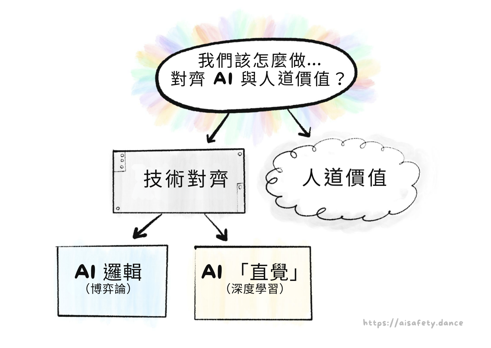
想感受這些問題有多難，先想想：我們連對自己人類都還沒解完——人會鑽法律字面、不守精神；人的直覺有偏見，一換新情況就失效。誰也不是自己心目中那種 100% 人道的人。
所以，容我肉麻一下：也許搞懂 AI，會幫我們搞懂自己。也許，我們還能解掉人類對齊問題：要怎麼讓人類穩穩地服務人道價值？
第三章：提出的解方
最後，我們可以來理解一些（可能的）解法——解邏輯、解直覺、解 AI，也解人類！包括：
- 技術解方
- 治理解方，由上而下與由下而上
- 「你就不能不蓋那個折磨裝置嗎」
——還有更多！專家對哪些方案行得通（如果有的話）意見不一⋯⋯但至少是個起點。
🤔 （可選閃卡複習！）
嘿，你有過這種感覺嗎？
- 「哇，我剛讀的東西超精彩、超有洞見」
- [兩週後全忘光]
- 「完了」
為了不讓這份導覽也變成這樣，我加了一些可選的互動閃卡！它們用「間隔重複」——一種相對簡單、有證據撐腰的方法，讓「長期記憶變成一種選擇」。（:想多瞭解間隔重複，點這裡！）
來：試試下面的閃卡，把剛學的留住！
（這些卡片會記住你在這個瀏覽器裡的進度，不用註冊，資料也不會離開你的裝置。閃卡介面改自 Orbit（Andy Matuschak 製作），中文化後由本站自行架設。想跨裝置、長期複習，可以用開源閃卡 App Anki，這裡有可下載的 Anki 牌組！）
（另外，答案不必一字不差，大意對就好。夠不夠接近，你自己當裁判。）
🤷🏻♀️ 關於 AI 安全的五個常見誤解
「讓你栽跟斗的，往往不是你不知道的事。 而是那些你篤定知道、但其實根本不是那麼回事的事。」
~ 常被安在馬克·吐溫頭上，但其實並非如此[9]
不論好壞，你對 AI 早就聽太多了。所以在往你腦子裡接上新的拼圖之前，得先把那些根本不對的舊碎片拔掉。
因此，容我來一篇「前五名」條列文⋯⋯
1) 不，AI 安全不是科幻宅的邊緣議題。
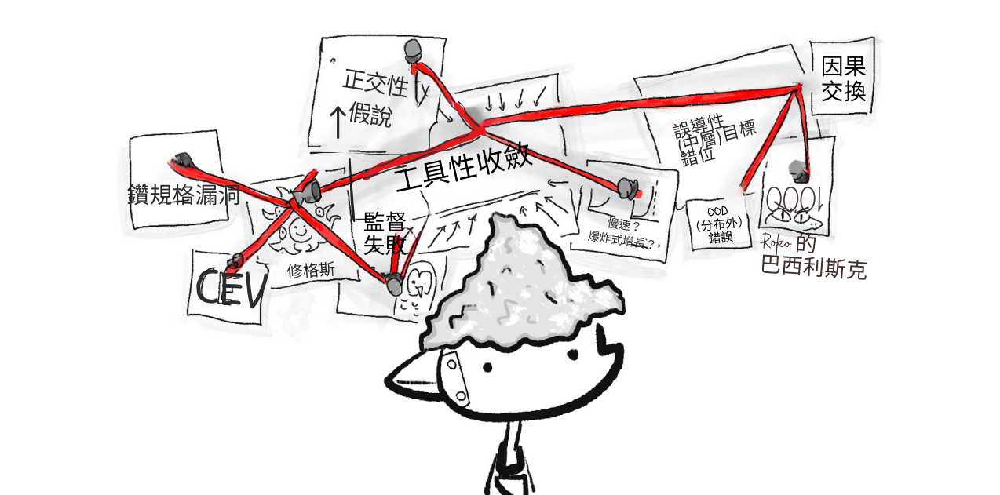
AI 安全／AI 風險以前確實比較邊緣，但到了 2024 年，美英政府都已有專責 AI 安全的部門[10]，美、歐、中也已就 AI 安全研究達成協議。[11] 這是許多頂尖 AI 研究者拉響警報的結果。這些人包括：
- Geoffrey Hinton[12] 和 Yoshua Bengio[13]，2018 年圖靈獎（「電腦界的諾貝爾獎」）共同得主，得獎原因是深度神經網路的研究——那正是所有新一代名 AI 在用的東西。[14]
- Stuart Russell 和 Peter Norvig，那本最常用人工智慧教科書的作者。[15]
- Paul Christiano，讓 ChatGPT 成為可能的那套 AI 訓練／安全技術的先驅。[16]
（講清楚：也有頂尖 AI 研究者反對對 AI 風險的擔憂，例如 Yann LeCun[17]，同樣是 2018 年圖靈獎共同得主、Facebook Meta 的首席 AI 研究員。另一個值得一提的名字是 Melanie Mitchell[18]，做 AI 與複雜科學的研究者。）
我知道「看看這些專家」是訴諸權威，但這只是用來反駁「唉，只有科幻宅才怕 AI 風險」這種說法。說到底，訴諸權威／宅都不夠；你得真的搞懂這該死的東西。（而你正在這樣做——你在讀這篇！所以謝謝你。）
不過說到科幻宅⋯⋯
2) 不，AI 風險不是在講 AI 變得「有感知」「有意識」，或生出「權力意志」。
科幻作家寫有感知的 AI，是因為他們在寫故事，不是技術論文。人工意識的哲學辯論很迷人，但跟 AI 安全無關。打個比方：核彈沒意識，但還是可以很不安全，對吧？
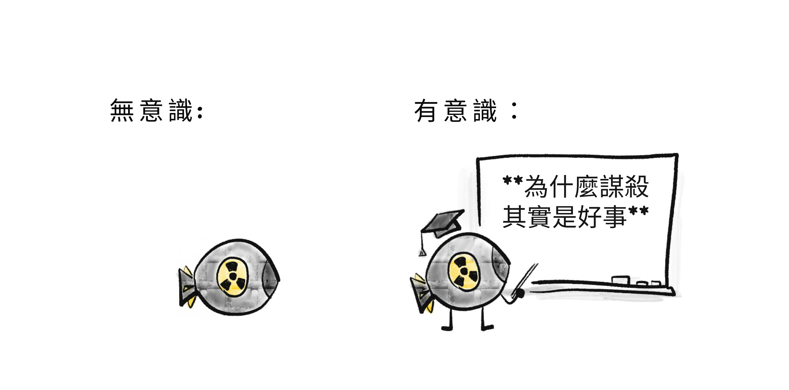
如前所述，AI 安全的真正問題其實很「無聊」：AI 從有偏見的訓練資料裡學錯東西、在稍微新一點的情境翻車、用邏輯正確但糟糕的方式達成目標，諸如此類。
可是，「無聊」不代表不重要。怎麼設計安全的電梯／飛機／橋，對多數外行人來說很無聊⋯⋯卻也是生死大事。災難級 AI 風險甚至不需要「超人類通用智慧」！例如，一個「只是」很會設計病毒的 AI，就能幫生物恐怖組織（像奧姆真理教[19]）殺死數百萬人。
（2025 年 12 月更新：雖然 AI 意識跟 AI 安全仍然各走各的，但從我開寫這個系列到現在這 1.5 年裡，對 AI 本身福祉的關注變得比較主流了一點。不是那種，嗯，主流主流，但頂尖 AI 實驗室之一 Anthropic 最近聘了全職「AI 福祉」研究員，他的工作已經真的改到了產品。）
總之！說到殺人⋯⋯
3) 不，AI 風險不一定等於滅絕、天網，或奈米機器人
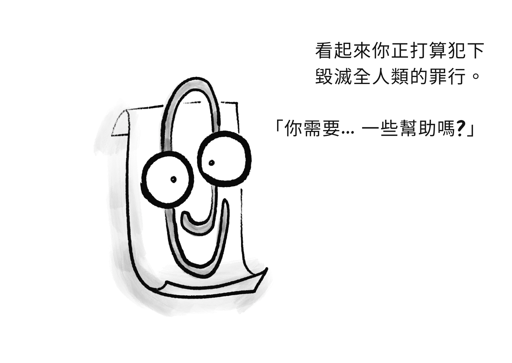
雖然多數 AI 研究者確實相信先進 AI 有 5% 以上「字面意義上大家全死」的風險[20]，但要說服人（尤其是決策者）相信從未發生過的事，非常難。
所以我想改強調：先進 AI——（尤其當任何有台高階電腦的人都能用時）——可以怎麼把已經在發生的壞事放大成災難。
例如：
- 生物工程大流行：某個生物恐怖邪教（如奧姆真理教[19:1]）用 AI（如 AlphaFold[21]）加上 DNA 列印（正以飛快速度變便宜[22]）設計多種新型超級病毒，並在全球主要機場同時釋放。
- （概念驗證：科學家早就用郵購 DNA 重建過小兒麻痺症⋯⋯二十年前。[23]）
- 數位威權主義：暴君用 AI 強化監控追捕抗議者（已經在發生），生成個人化定向宣傳（有點在發生），再配上自主軍事機器人（即將發生）⋯⋯全套用來握著矽拳統治。
- 資安贖金地獄：網路罪犯弄出一種會自己駭入、自己改寫程式的電腦病毒，永遠比人類防線快一步。結果：擋不住的全球殭屍網路，把關鍵基礎設施當人質勒索，還能操弄頂級 CEO 與政客替它辦事。
- （背景：沒有 AI，駭客就已破壞過核電廠[24]、把醫院當人質勒索[25]——可能因此害死過人[26]——還兩度差點毒了整個小鎮的自來水。[27] 有了 AI，深偽已被用來影響選舉[28]、單次搶案偷走 2500 萬美元[29]，以及對父母下手勒索——用的是孩子被綁架、哭著求救的偽造聲音。[30]）
- （這也是為什麼「發現 AI 失控就關掉」沒那麼容易；從電腦安全史來看，我們本來就很不會注意到問題。:現代世界蓋在一座倒立紙牌屋上——我再怎麼強調都不夠。）
- （2025 年 12 月更新：幾個月前，研究人員找到全球首例確認案例，「代理型 AI 成功打進已確認的高價值目標蒐集情報，包括大型科技公司與政府機構」。正在發生！！）
以上例子都是「人類濫用 AI 搞出亂子」，但別忘了：先進 AI 也能自己幹出這些事，理由很「無聊」——用邏輯正確但糟糕的方式完成目標、目標壞掉但技能還在，等等。
（加碼，:一些具體、說得通的方式：流氓 AI 如何「逃出圍堵」，或影響物理世界。）
重點是：就算你不認為 AI 是字面上百分百滅種的風險⋯⋯「自製生物恐怖」和「帶機器人的《1984》」也仍值得認真對待。
反過來說⋯⋯
4) 是的，擔心 AI 壞處的人，也看得到它的好處。
擔心 AI 風險的人不是盧德分子。事實上，他們警告 AI 的壞處，正是因為他們在乎 AI 的好處。[31] 幽默作家 Gil Stern 說過：[32]
「樂觀主義者和悲觀主義者都對社會有貢獻：樂觀者發明飛機，悲觀者發明降落傘。」
所以：就算本系列會細講 AI 已經出包的地方，也值得記住 AI 已經做對的幾件事：
- AI 分析醫學影像可以跟人類專科醫師一樣好，甚至更好！[33] 這是實打實在救命！
- AlphaFold 基本上解掉了生物學一個卡了 50 年的大問題：怎麼預測蛋白質形狀。[21:1]（它能把形狀預測到一個原子寬！）對醫學與理解疾病的應用巨大。
太多時候，我們把科技——甚至救命科技——當成理所當然。所以讓我拉遠一點看背景。這是過去 2000 多年的兒童死亡率，也就是青春期前就死去的孩子比例：
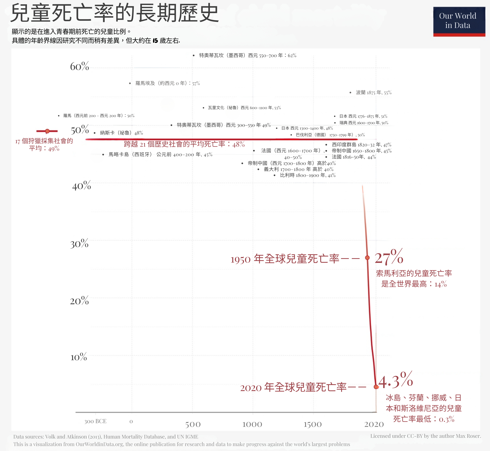
（來自 Dattani, Spooner, Ritchie and Roser (2023)）數千年來，不管富國窮國，整整一半的孩子就這樣沒了。這幾乎是常數。然後從 1800 年代起——多虧細菌論、衛生、醫藥、乾淨的水、疫苗等科學／技術——兒童死亡率像斷崖一樣掉下去。我們還有很長的路——我拒絕接受[34]全球 4.3%（23 人裡 1 人）的兒童死亡率——但先感謝一下：人類怎麼這麼快砍掉一場綿延千萬年的災厄。
我們怎麼做到的？政策是故事的一大塊，但政策是「可能的藝術」[35]，沒有好的科學與技術，上面那些根本不可能。如果安全、人道的 AI 能再幫我們往前推進哪怕幾個百分點——朝向剿滅癌症、阿茲海默、HIV／AIDS 等剩下的巨龍——那就是數千萬多活下來的親人，多從死神手裡搶回一天。
去他的火星，這才是先進 AI 重要的理由。
⋯⋯
等等，真的嗎？ChatGPT、DALL-E 這種玩具，真的牽涉到生死？這就把我們帶到我想拆的最後一個誤解：
5) 不，專家並不認為現在的 AI 是高風險／高回報。
拜託喔，你大可以合理反駁，AI 連穩穩畫超過 3 個物件都辦不到。它要怎麼接管世界？見鬼，它要怎麼搶我的工作？
請看這則相關 xkcd：
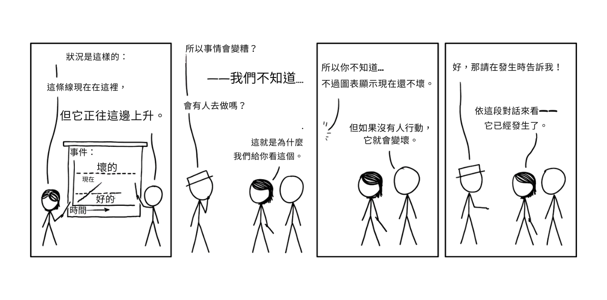
這就是我對「別擔心 AI，它連 [X] 都不會」的感覺。
我們後現代的記憶力有這麼差嗎？就在一個十年前，僅僅一個，世界上最先進的 AI 還不能穩穩地認出貓的照片。現在，AI 不但能做到人類水準，還能在一分鐘內吐出:一張文森·梵谷風格、貓忍者切開西瓜的圖。
現在的 AI 對我們的工作或安全是大威脅嗎？不是。（好吧，深偽詐騙除外，前面提過了。）
但是：如果 AI 繼續以過去十年差不多的速度進步⋯⋯我覺得 30 年內出現「愛因斯坦／奧本海默級」AI 並非不可能。[36][37] 這落在很多人的有生之年！
正如「他們」所說：[38]
種樹最好的時機是 30 年前。第二好的時機是今天。
今天就種下那棵樹吧！
🤔 （可選閃卡複習 #2！）
🤘 導讀總結：
- AI 與 AI 安全的 2 個核心衝突是：
- 邏輯「對上」直覺
- 問題出在 AI「對上」出在人類
- 澄清關於 AI 風險的誤解：
- 不是科幻宅的邊緣議題。
- 不需要 AI 意識或超智慧。
- 風險遠不只「字面 100% 人類滅絕」。
- 我們確實知道 AI 的好處。
- 重點不是現在的 AI，而是 AI 進步得有多快。
（要複習閃卡，點右側欄的 目錄圖示，再點「🤔 複習」連結。或者下載導讀的 Anki 牌組。）
終於！高空鳥瞰看完了，我們可以開始這場 AI 安全快轉導覽⋯⋯寫給我們溫熱、正常、有血有肉的人類！
點此繼續 ⤵
:x Four Objects
嗨！每當有段跑題塞不進主線，我就會扔進這種「可展開」區塊！（連結會是虛線底線，不是實線。）
~ ~ ~
更新：這段原本寫於 2024 年 5 月。一年半後的 2025 年 12 月，它已經不成立了。詳見本段結尾。
所以，這是一則要畫四個物件的提示詞：
「一個黃色金字塔夾在紅色球體與綠色圓柱之間，全部放在一個大藍色立方體上。」
以下是頂尖生成式 AI 的前四次嘗試（沒有精挑細選）：
Midjourney：
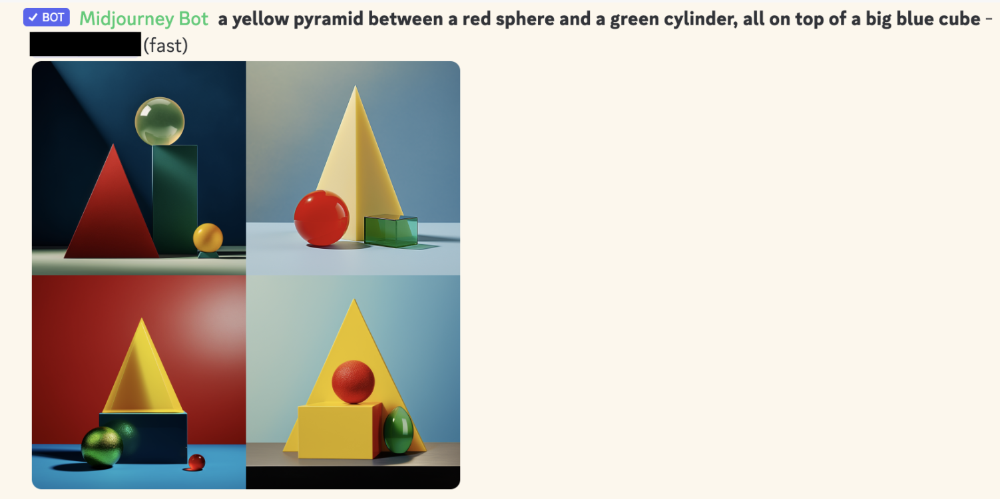
DALL-E 2：
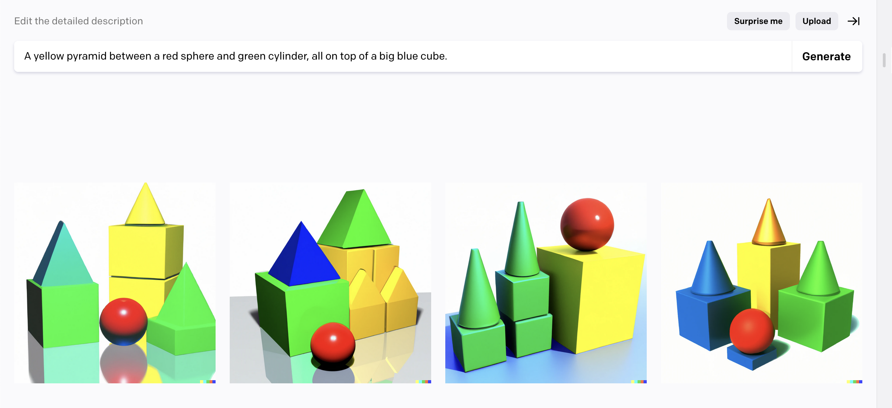
DALL-E 3：
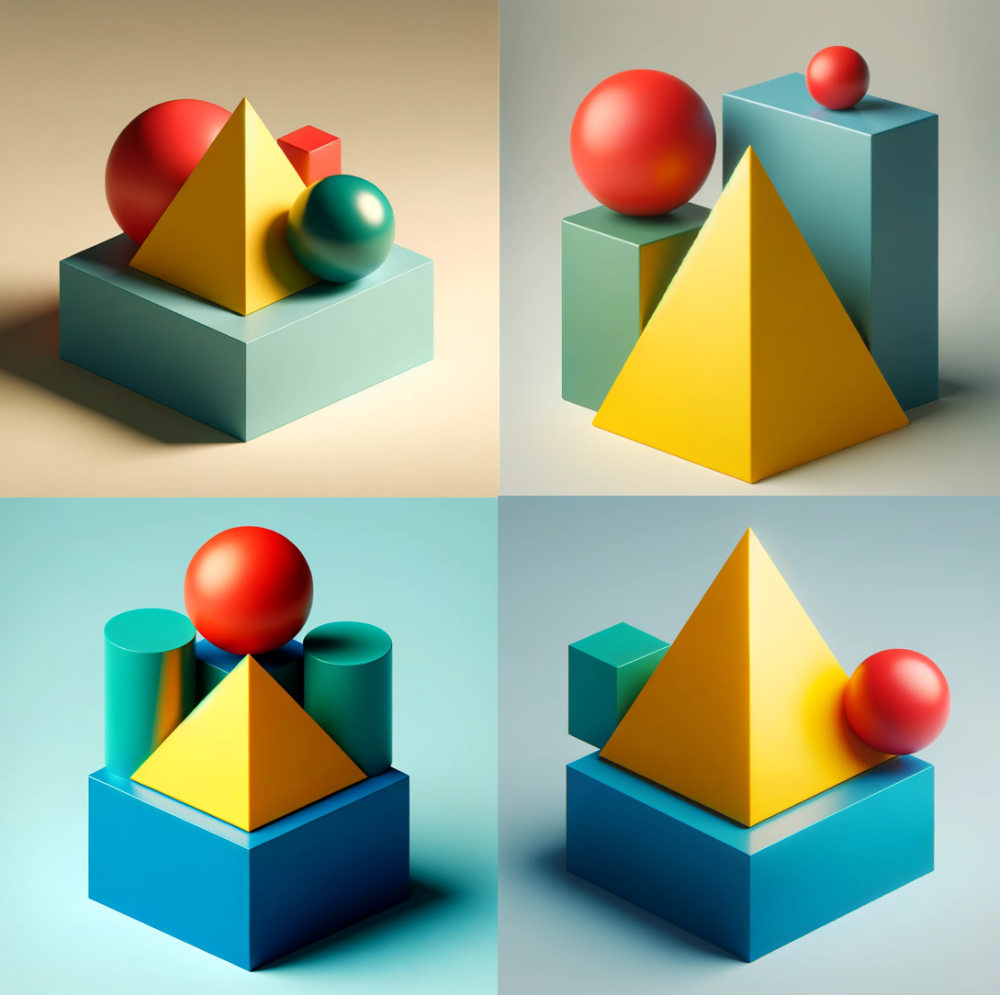
（右下角那張很接近！但看它其他幾次，顯然是運氣。）
為什麼這能說明 AI 缺「邏輯」？「符號邏輯」的核心能力之一叫「組合性」——講白了，就是能穩穩地把舊東西拼成新東西，例如「綠」+「圓柱」=「綠色圓柱」。如上所示，生成式 AI（截至 2024 年 5 月）在物件數到 4 個以上時，拼東西非常不穩。
2025 年 12 月更新：影像生成模型終於解決了「組合性」！
下面是 ChatGPT 5.1 第一次就畫對上述提示詞：
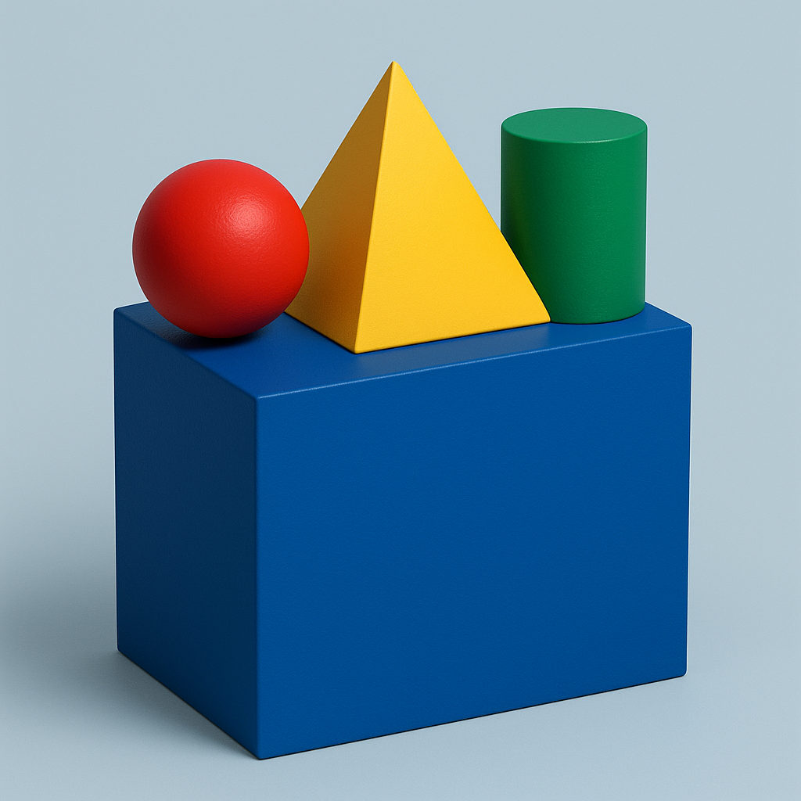
我原本打算把這段換成「AI 畫不出開局的西洋棋盤」——更難的組合性示範，AI 直到 2025 年 7 月還是做不到。可就我目前所見，連那個現在也行了！想多看 AI 影像模型 vs「組合性」，見 Scott Alexander 2025 年 7 月這篇。
不過話說回來，AI 能解數學奧林匹亞等級的題，卻還不能玩寶可夢或打理一台販賣機的生意。現代 AI 到底會什麼、不會什麼，非常撲朔迷離、也很反直覺。
~ ~ ~
好了，這個果核到此結束！要關掉它，點下面的「x」按鈕 ⬇️，或右上角的「全部關閉」分頁 ↗️。或者直接繼續往下捲。
:x Nutshells
把滑鼠移到這些果核的右上角，或移到本文任何主標題上，就會出現這個圖示：


再點那個圖示，會跳出說明，教你怎麼把這些果核嵌進自己的部落格／網站！
:x Spaced Repetition
「不用就會忘。」
這是肌肉和大腦共通的核心原則。（押韻了，所以一定是真的！）數十年教育研究穩穩指出（Dunlosky et al., 2013 [pdf]）：想長期記住東西，光重讀或畫重點不夠——你得真的考自己。
這就是閃卡超好用的原因！但有兩個問題：1）你想記的卡片一到幾百張就會很崩潰。2）反覆複習你早就很熟的卡，效率很差。
間隔重複正好解掉這兩個問題！來看怎麼運作：假設你學了一個事實，然後不複習。你對它的記憶會隨時間衰退，直到跨過一道「大概忘了」的門檻：

但如果你在快要忘記之前複習，記憶強度會拉回來⋯⋯更重要的是，之後衰退會變慢！

所以間隔重複的做法是：在系統預測你快忘的當下複習，一輪又一輪。你會看到，複習間隔越來越拉長：

這就是間隔重複超有效率的原因！每成功複習一次，下次間隔就會倍增。比方倍率是 2 倍：你第 1 天複習，然後第 2 天，再來第 4 天、第 8、16、32、64 天⋯⋯只要十五次複習，就能記住一張卡 215 = 32,768 天 = 九十年。（理論上。實務上沒那麼長，但還是超有效率！）
這還只是一張卡。靠著指數拉長的間隔，你可以每天加 10 張新卡（建議量），一年長期記住 3650 張卡⋯⋯每天複習不到 20 分鐘。（對照：3000 多張卡就夠掌握一門外語的基本詞彙！一年，每天 20 分鐘！）
間隔重複是最有實證支持的學習方式之一（Kang 2016 [pdf]）。但在語言學習圈和醫學院之外，它還不太有名⋯⋯目前為止。
那麼：你要怎麼開始間隔重複？
- 最受歡迎的選擇是 Anki，開源 App。（桌面、網頁、Android 免費⋯⋯iOS 要 25 美元，用來支持其餘開發。）
- 如果你想動手做，可以做實體 Leitner 盒子：:Chris Walker 的兩分鐘 YouTube 教學。
想多瞭解間隔重複，可以看 Ali Abdaal (26 分鐘) 和 Thomas Frank (8 分鐘) 的影片。
這就是讓長期記憶變成一種選擇的方法！
祝學得開心！👍
:x Concrete Rogue AI
AI「逃出圍堵」的方式：
- AI 駭進自己那台電腦，逃上網際網路，然後「住」在去中心化的殭屍網路裡。對照：已知最大的殭屍網路感染了約 3000 萬台電腦！（Zetter, 2012 for Wired）
- AI 說服工程師：它有感知、正在受苦、應該被放走。這已經發生過了。2022 年，Google 工程師 Blake Lemoine 被自家語言 AI 說服——它有感知、想要平權——於是 Lemoine 冒著被炒的風險（而且他真的被炒了！）洩漏與 AI 的「訪談」，想讓世界知道並為它爭取權利。（摘要：Brodkin, 2022 for Ars Technica。AI「訪談」全文在此：Lemoine (& LaMDA?), 2022）
AI 影響物理世界的方式：
- 駭客能搞壞核電廠、讓約 1,400 名班機乘客上不了天、還（差點）毒了整個小鎮自來水兩次——AI 也能如法炮製：駭進現實世界基礎設施所仰賴的電腦。現在大量基礎設施（與關鍵供應鏈）都跑在連網電腦上。
- 跟 CEO 從冷氣房辦公室影響世界一樣：搬錢。AI 大可以付錢請人替它辦事。
- 駭進私人裝置與資料，再勒索對方替它做事。（就像《黑鏡》裡最黑暗的那集 Shut Up And Dance。）
- 駭進自主無人機／四軸飛行器。老實說，我很意外還沒人用休閒四軸機殺人——比方撞進高速公路車潮，或在起降時飛進噴射機引擎。
- AI 可以說服／賄賂／勒索 CEO 或政客去量產大量實體機器人——（名目可以是體力勞動、軍事、搜救、送貨無人機、實驗室、機器人貓娘女僕等等）——再駭進那些機器人，用來影響物理世界。
:x XZ
兩個月前［2024 年 3 月］，一位志工、下班後的開發者在一套重要程式碼裡挖到惡意後門⋯⋯這後門籌謀了三年，再過幾週就要上線，而且會打中絕大多數網際網路伺服器⋯⋯而這位志工抓到它全靠偶然：他發現自己的程式碼跑起來慢了半秒。
這就是 XZ Utils 後門。以下幾篇寫給外行人（大概）看得懂的說明：Amrita Khalid for The Verge，Dan Goodin for Ars Technica，Tom Krazit for Runtime
電腦安全就是一場惡夢，還附贈睡眠癱瘓的惡魔。
:x Cat Ninja
提示詞：
「文森·梵谷（1889）油畫，厚塗，有質感。一隻貓忍者把西瓜切成兩半。」
DALL-E 3 生成：（精選）
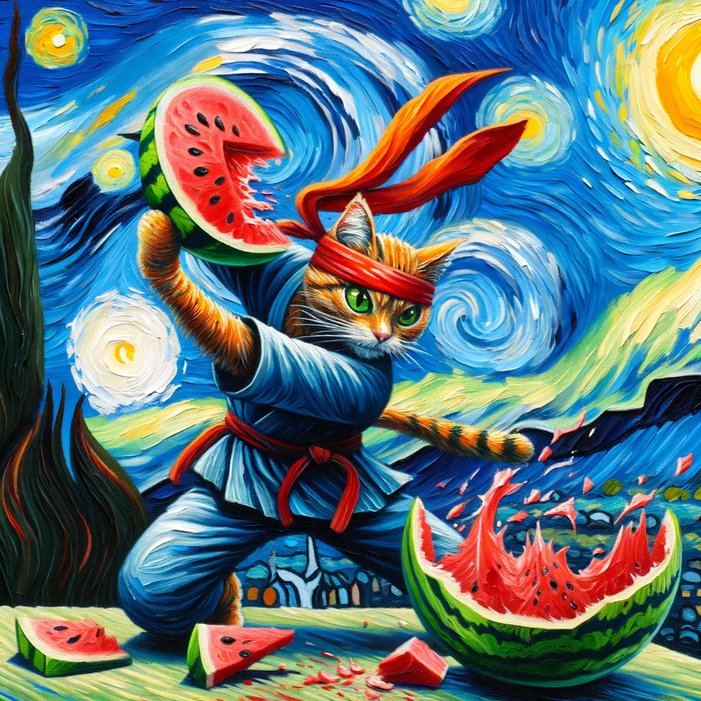
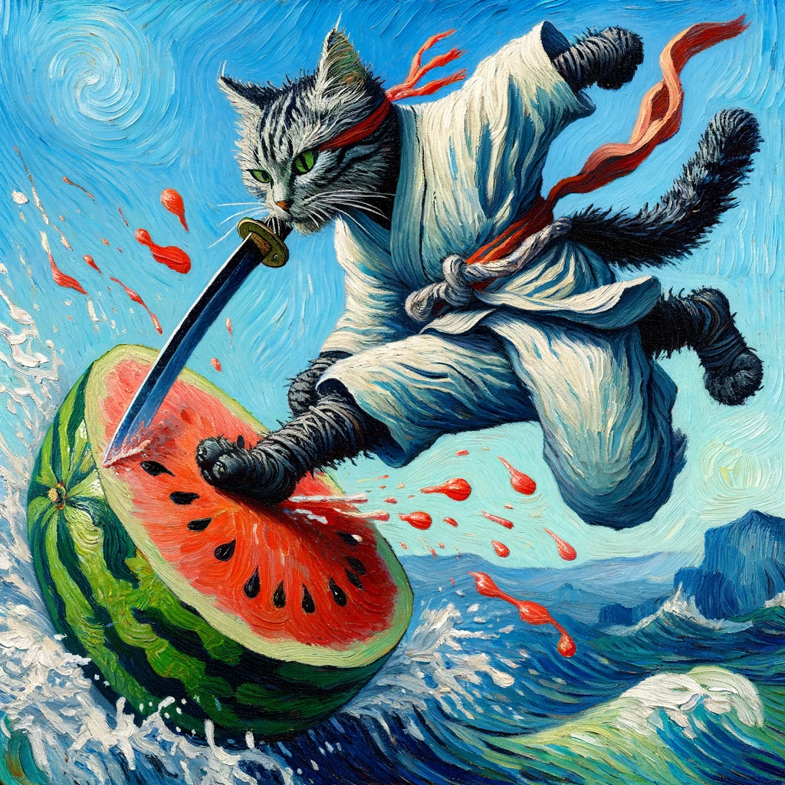
（等等，那條頭帶是從眼睛裡長出來的嗎？！）
我特意指定文森·梵谷的風格，這樣你們就不能拿「侵權」來抓我。這傢伙老早就不在了。
嗨！我不像別的那些註腳。😤 我不會煩死人地把你丟到頁面最下面，而是彈出一個氣泡，讓你繼續順著讀！順便，下一個註腳才是這段的出處。 ↩︎
系統 1 思考又快又自動（例如騎腳踏車）。系統 2 思考又慢又刻意（例如做填字遊戲）。這個概念靠 Daniel Kahneman 的《快思慢想》（2011） 廣為人知，書裡總結了他與 Amos Tversky 的研究。說「總結」是客氣話——那本書大概有 500 頁。 ↩︎
1997 年，IBM 的 Deep Blue 擊敗了當時的世界西洋棋冠軍 Garry Kasparov。可是十多年後的 2013 年，最頂的機器視覺 AI 做影像分類也只有 57.5% 準確率。一直到 2021 年，AI 才摸到 95% 以上。（來源：PapersWithCode） ↩︎
「價值對齊問題」一詞，是 Stuart Russell（那本最常用 AI 教科書的共同作者）在 Russell, 2014 for Edge 首度提出的。 ↩︎
我常看到這種情緒：「讓 AI 對齊人類價值其實很糟，因為現在的人類價值就很糟。」老實說，[瞟一眼歷史教科書] 我有八成同意。光讓 AI 表現得像人類不夠，它得表現得人道。 ↩︎
也許 50 年後，在基因改造賽博格的未來，把同理心叫做「人道」聽起來會有點物種主義的復古味。 ↩︎
這些問題的花俏術語分別是：a)「鑽規格漏洞」（specification gaming），b)「工具趨同」（instrumental convergence）。第二章會細講！ ↩︎
這些問題的花俏術語分別是：a)「AI 偏見」，b)「可解釋性」，c)「分布外錯誤」或「穩健性失敗」，d)「內部失調」或「目標錯誤泛化」或「目標穩健性失敗」。同樣，第二章會全部講到！ ↩︎
Quote Investigator（2018）找不到這句話真正作者的硬證據。 ↩︎
英國在 2023 年 11 月成立了全球第一個國家支持的 AI 安全研究所。美國在 2024 年 2 月也跟進成立了 AI 安全研究所。我剛發現兩篇都自稱「第一個」。行吧。 ↩︎
2023 年布萊切利宣言，2024 年首爾 AI 峰會。2025 年 12 月更新：掃興的是，2025 年 AI 行動峰會不太順利——美英因協議裡有「包容性 AI」條款而拒絕簽署。 ↩︎
Kleinman & Vallance, 「AI『教父』Geoffrey Hinton 辭去 Google 時警告其危險。」 BBC News, 2023 年 5 月 2 日。 ↩︎
Bengio 在美國參議院就 AI 風險的證詞：Bengio, 2023。 ↩︎
沒在開玩笑，下面這些全部都用深度神經網路：ChatGPT、DALL-E、AlphaGo、Siri／Alexa／Google Assistant、特斯拉的 Autopilot。 ↩︎
Russell & Norvig 的教科書是《人工智慧：現代方法》。Russell 在 2014 年那篇首創「對齊問題」一詞的文章裡，對 AI 風險的聲明見：Russell 2014 for Edge magazine。我沒找到 Norvig 本人的公開聲明，但他確實聯署了這則關於 AI 風險的一句話聲明：「減輕 AI 帶來的滅絕風險，應與大流行病、核戰爭等社會級風險並列，成為全球優先事項。」 ↩︎
在 OpenAI 任職時，Christiano 共同開創了人類回饋強化學習／RLHF 這套技術(Christiano et al 2017)，把普通 GPT（超強自動完成）變成了 ChatGPT（一般人真的用得上的東西）。他對此抱持正面但五味雜陳的心情，因為 RLHF 提高了 AI 的安全性，同時也提高了它的能力。2021 年，Christiano 離開 OpenAI，成立了對齊研究中心，一個全心只做 AI 安全的非營利組織。 ↩︎
Vallance (2023) for BBC News：「[LeCun] 說它不會接管世界，也不會永久消滅工作。[⋯⋯]「一旦意識到不安全，就別蓋它。」[⋯⋯]「AI 會接管世界嗎？不會，那只是把人性投射到機器上，」他說。」 ↩︎
Melanie Mitchell 和 Yann LeCun 在 2023 年「AI 是否構成存亡威脅？」公開辯論裡站「懷疑派」；「擔憂派」則是 Yoshua Bengio 與物理學家兼哲學家 Max Tegmark。 ↩︎
一個用化學與生物武器攻擊人的日本邪教。最惡名昭彰的是 1995 年在東京地鐵釋放神經毒氣，造成 1,050 人受傷、14 人死亡。（維基百科） ↩︎ ↩︎
一份寫給外行人看的摘要，整理最近對 2,778 名 AI 研究者的調查：Kelsey Piper (2024) for Vox 原始報告在此：Grace et al 2024。請記住，正如論文本身也提醒的，這則重要但書：「預測本來就難，而且領域專家的表現被觀察到並不特別好。受訪者的專長是 AI；就我們所知，他們並沒有特別會預測的本事。」 ↩︎
寫給外行人的 AlphaFold 解釋：Heaven, 2020 for MIT Technology Review。或見它的維基百科條目。 ↩︎ ↩︎
寫到這裡時，DNA 合成的市價大約是每個「鹼基對」~$0.10 美元。對照一下：小兒麻痺病毒 DNA 約 7,700 個鹼基對，意思是列印一支小兒麻痺只要大約 770 美元。 ↩︎
Stuxnet 是美以設計的電腦病毒，專門攻擊並破壞伊朗核電廠。估計 Stuxnet 弄壞了伊朗約 20% 的離心機！ ↩︎
2017 年，WannaCry 勒索軟體攻擊攻擊了全球約 300,000 台電腦，包括英國醫院。2020 年 10 月，Covid-19 高峰期，勒索軟體又打進數十家美國醫院。（Newman, 2020 for Wired） ↩︎
2020 年 9 月，一名婦女因醫院遭勒索軟體攻擊而被拒於門外。她後來身亡。Cimpanu (2020) for ZDNet。（不過「證據不足」，無法在法律上指控駭客直接造成她的死亡。Ralston, 2020 for Wired） ↩︎
2021 年 1 月，灣區一家淨水廠被駭，處理程式被刪光。（Collier, 2021 for NBC News）2021 年 2 月，佛羅里達一個小鎮的淨水廠被駭，有人把危險劑量的鹼液加進供水。（Bajak, 2021 for AP News） ↩︎
Benj Edwards，「深偽詐騙犯在史上首宗 AI 搶案中捲走 2500 萬美元」，Ars Technica，2024 年 2 月 5 日。 ↩︎
「完全是她的聲音。是她的語調。是[我女兒]會哭的那種哭法。」[⋯⋯]「現在只要三秒你的聲音，就能[做深偽]。」（Campbell, 2023 for local news outlet Arizona's Family。內容警語：含性侵威脅。） ↩︎
「[那個可疑的論點]『末日預測往往沒考慮 AI 在減少醫療失誤、車禍等方面的潛在好處。』[⋯⋯ 這]就像在說：分析核電廠熔毀可能的核工『沒考慮』便宜電力的潛在好處；而且因為核電有天可能發超便宜的電，我們就不該提、也不該防熔毀。」來源：Dafoe & Russell (2016) for MIT Technology Review。 ↩︎
Liu & Faes et al., 2019：「本回顧發現，深度學習模型的診斷表現與醫療專業人員相當。」[粗體為筆者所加] AI 對人類專家「真陽性」率：87.0% 對 86.4%。「真陰性」率：92.5% 對 90.5%。 ↩︎
我生平最愛的引言之一：「世界很糟。世界好多了。世界可以更好。三句同時為真。」 ↩︎
第一任德國總理 Otto von Bismarck 的名言：「Die Politik ist die Lehre vom Möglichen。」（「政治是可能的藝術。」） ↩︎
估計來自「數值後驗抽取」。換句話說，我是從我的—— ↩︎
好啦，說認真的：最準的預測者估計人類等級的「通用人工智慧」（AGI）到 2033 年，不到十年，影響規模堪比工業革命的「轉型級 AI」到 2044 年，不到二十年。我個人比這悲觀一點，但若到 2060 年還沒出現愛因斯坦級 AI，我會傻眼。 ↩︎
{kind=link}